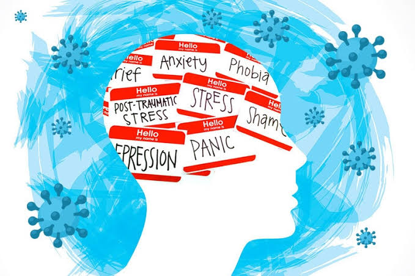
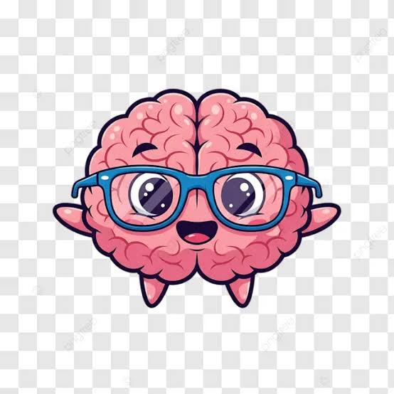

Un proyecto para promover la salud mental, el bienestar emocional y el éxito escolar de los estudiantes.
Existe un alto índice de ansiedad, depresión y riesgo de suicidio en estudiantes, el cual se manifiesta en el bajo rendimiento academico y apatia generalizada hacia las actividades escolares y comunitarias.
Una buena salud mental ayuda a los estudiantes a aprender, convivir, expresar sus emociones y enfrentar las dificultades.
Prestar atención sin juzgar.
Hacer sentir a los demás que no están solos.
Buscar ayuda cuando sea necesario.
Cambios de ánimo, aislamiento, pérdida de interés, bajo rendimiento o falta de motivación pueden indicar que alguien necesita apoyo.

Personas cercanas que pueden escuchar y brindar apoyo.
Docentes y compañeros que pueden orientar y acompañar.
Crear redes de apoyo que fomenten la empatía, la comunicación y el cuidado de la salud mental dentro de la comunidad escolar.
Escuchar, acompañar y pedir ayuda puede hacer la diferencia.
